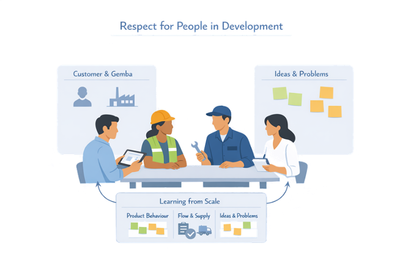
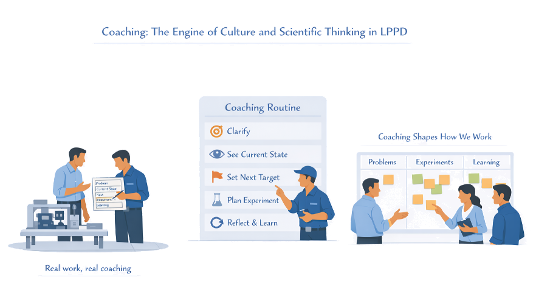
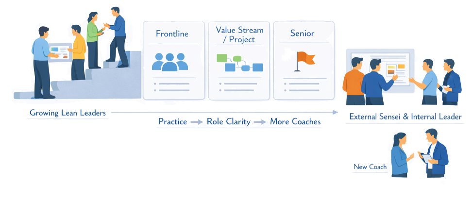
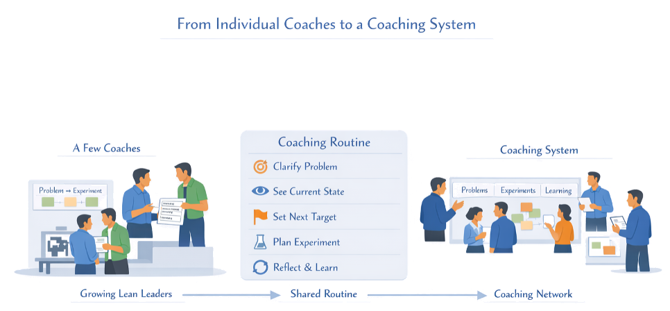
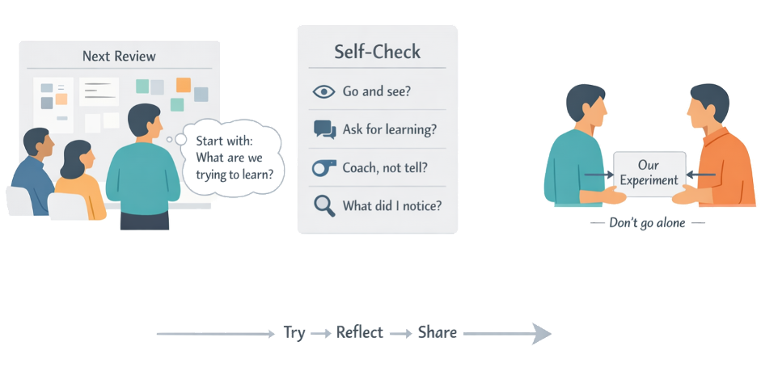

Chapter 9
The Foundation That Makes Everything Else Hold
If we took our current culture and leadership behaviours as “the process,” what experiments would we run to make them match the LPPD system we actually want?
In earlier chapters you designed value streams, products, experiments, and decision systems that can make development faster, calmer, and more reliable. None of that will hold unless culture, leadership, and coaching line up with it; otherwise, visual boards become wallpaper, experiments turn back into big bets, and milestones drift toward politics and schedule pressure.
In LPPD, culture is not slogans about innovation; it is the day-to-day habits of how people talk about problems, how leaders respond to bad news, and how teams are coached to think scientifically. Leadership means going to see, asking for learning instead of status, and developing people as problem solvers, while coaching provides the repeated practice that turns new behaviours into a stable way of working.
Section 9.1
What Culture Do We Need for LPPD?
LPPD rests on a culture where people can see problems, speak up, and learn together without fear. It blends the classic lean pillars — respect for people and continuous improvement — with scientific thinking and transparency in everyday development work. Without this foundation, tools like obeya, A3s, and experiments quickly slide back into paperwork and status theatre.
Respect for People
Believing that the people closest to the work have crucial insight, and organizing around that belief. Teams get time, tools, and coaching to solve problems — not just to hit dates.
Problems as Gold
Treating problems as valuable signals, not defects in people. Teams are encouraged to surface issues early and approach them with a scientific mindset instead of quick fixes or blame.
Transparency
High transparency about work, knowledge, and decisions so that people can align and help one another. Shared visual systems replace hidden spreadsheets and competing slide decks.
Respect for People in Development

- Engineers, operators, and service technicians are invited into early design and learning discussions, not only consulted late
- Ideas and concerns raised from the gemba are listened to, tested, and visibly followed up, so people see that speaking up matters
- First-time errors trigger learning and support, not blame, reinforcing that the system — not the individual — is the main object of improvement
Problems as “Gold” and Scientific Thinking
- Visible problem boards and A3s that clearly state gaps, causes, experiments, and follow-up, making thinking transparent and shared
- Leaders and coaches who respond to bad news with curiosity — “show me,” “what do we know,” “what will we try next?” — rather than pressure to explain it away
- Everyday use of PDCA or kata-style cycles so that experimentation and reflection become routine, not reserved for special projects
Transparency and Shared Truth
- Clear ownership for A3s, experiments, and decision records, visible on walls or digital boards so everyone knows who is working on what and why
- Open access to information about flow, quality, and learning — engineers can see plant issues; plant teams can see upcoming changes
- Reviews and obeya walks that revolve around a single version of the truth, not competing slide decks or narratives
Section 9.2
Lean Leadership in Product Development
Lean leadership is what turns LPPD principles from diagrams into daily practice. In development, that means leaders go where the work is, ask for learning instead of status, and grow people as problem solvers, rather than steering from conference rooms and dashboards.

Go and See, Ask and Listen
In product development, “gemba” is the lab, line, customer site, and obeya — not just the shop floor. Lean leaders make a habit of going to see real work and real use, standing with teams at prototypes, pilot lines, and learning walls.
In obeya and at experiments, looking at actual artefacts (prototypes, rigs, data) rather than only slide summaries
“What are you trying to learn?” “Walk me through your reasoning.” “What options did you consider?” — not yes/no status checks
More listening than talking; using silence so engineers and operators can surface issues that don’t fit the planned narrative
Developing People as Problem Solvers
Lean leadership in development is less about personally solving the hardest technical problems and more about teaching others how to think scientifically. Leaders use everyday situations as coaching opportunities.
- Use simple, repeatable structures (A3s or short coaching dialogues) to help people clarify problems, distinguish facts from assumptions, and design small experiments
- Ask what teams have tried and what they learned before offering suggestions, reinforcing ownership and reflection
- Recognise and celebrate good problem-solving behaviour — clear framing, thoughtful experiments, honest reflection — even when outcomes are messy or negative
Pulling for Knowledge, Not Green Status
Traditional reviews reward positive status and polished slides; lean leadership rewards clear gaps and honest evidence. In LPPD, leaders make it safe and expected to bring forward risks, failed experiments, and open questions — as long as there is a plan to learn.
- Start reviews by asking for key uncertainties and experiments, not traffic-light charts
- React to surprises with curiosity: “What did we expect? What did we actually see? What might that mean?”
- Protect time and resources for the next experiment when evidence is inconclusive, instead of forcing a decision to “stay on schedule”
This shifts the culture from “prove we are right” to “find out what is right” — the core of knowledge-based development.
Section 9.3
Coaching as the Engine of Culture
If tools and processes are the “hardware” of LPPD, coaching is the operating system that makes them run. Without coaching, people attend trainings, fill in templates, and then slide back into old habits. With consistent coaching, they repeatedly practice scientific thinking in real work, until “clarify the problem, run a small experiment, reflect” becomes the natural reflex.

Elements of a Simple Coaching Routine
Effective coaching does not need to be complicated or time-consuming, but it does need to be habitual and structured. The coach’s role is to keep ownership with the learner: guiding the thinking, not supplying the answers.
Why Coaching, Not Just Training
Training can explain concepts, but it rarely changes what people actually do when they are under time pressure. Coaching closes this gap by pairing real work with real guidance — in the gemba, not in a classroom.
Where to Embed Coaching in LPPD
Coaching works best when it is hooked onto existing rhythms rather than added as yet another meeting.
- Obeya walks and knowledge reviews — choose one or two topics and coach the responsible people through their problem-solving rather than just asking for status
- Daily or weekly stand-ups at labs or pilot lines — use one small issue as a quick coaching moment on framing and next experiment
- Formal mentoring for key roles (chief engineers, value stream managers, project leaders) where sessions focus on how they think and lead, not only on results
Section 9.4
Developing Leaders and Coaches
Lean systems don’t depend on a few charismatic heroes; they rely on many leaders at different levels who can think and coach in a disciplined way. Developing those leaders is itself a long-term learning process — built through practice on real work, not through one-off seminars.

Growing Lean Leaders Over Time
- Define a small set of observable behaviours expected from leaders in development (go and see, ask for learning, coach problem-solving, make evidence-based decisions)
- Give emerging leaders safe practice arenas: owning an obeya, leading knowledge reviews, or sponsoring a learning cycle, with explicit feedback from experienced sensei
- Use regular reflection (short journals, peer discussions, after-action reviews) so leaders examine how they showed up in key moments — not just whether the project “hit its dates”
Roles at Different Levels
Using Internal and External Sensei
Most organisations need a mix of internal champions and external guides to shift deeply ingrained habits. Internal leaders understand context and history; external sensei can challenge assumptions and introduce patterns that aren’t yet part of the culture.
- Pair key internal leaders with experienced coaches for a defined period (one major project) with the shared goal of developing both results and capability
- Treat external support as a temporary scaffold, not a permanent crutch: over time, coaching responsibilities move to internal leaders
- Make the development of new coaches explicit: identify people with aptitude and give them structured opportunities to practice coaching others on real problems
Section 9.5
Building a Coaching Culture Across the Value Stream
A few good coaches can improve a project; a coaching culture can transform a whole value stream. The aim is that scientific thinking and respectful problem-solving are not special initiatives but the normal way people work — from engineering and operations to supply chain and service.

From Individual Coaches to a Coaching System
Many organisations start with one or two passionate lean coaches and stall when those people move on. To avoid this, coaching needs its own simple system.
Lightweight coaching patterns (10–15 min questions) that any leader can learn and use in daily work — not just trained specialists
Leaders at each level regularly coach a small number of people, not just manage tasks — built into how performance is defined
A visible network of coaches who meet to share experiences, compare patterns, and improve their own practice together
Aligning People Systems with a Coaching Culture
If hiring, evaluation, and promotion still reward firefighting and heroics, a coaching culture will never take root. People systems need to signal that developing others and improving the system matters.
- Include observable coaching and problem-solving behaviours in leadership expectations and feedback — not just delivery metrics
- Surface and celebrate stories where thoughtful experimentation prevented bigger problems, even if the first results were “failures”
- Offer pathways and recognition for people who become strong coaches, so that “helping others learn” is seen as a core career contribution, not a side hobby
Section 9.6
Practical Start: Upgrading Your Own Leadership and Coaching
You don’t need a full leadership program to begin shifting culture; you can start by changing how you show up in one team and one review. The aim is to turn everyday moments into small experiments in lean leadership and coaching, then learn from what happens.

Pick One Arena and One Behaviour
Rather than trying to “be a different leader everywhere,” choose one concrete arena (a project, obeya, or team stand-up) and one behaviour to practice deliberately for a few weeks. Treat it as a time-boxed experiment in your own behaviour, not a personality change.
- In your main project review, always start with: “What are we trying to learn? What are the key uncertainties?” before asking about schedule
- In a daily stand-up, pick one issue and coach the owner through clarifying the problem and defining a small next experiment, instead of jumping to solutions
- During gemba visits, commit to asking at least three open questions before offering any opinion
Invite One Person into the Experiment
Culture spreads faster when you don’t go alone. Pick one colleague and invite them to join you in a simple experiment.
Use a Simple Self-Coaching Check
After each selected meeting or visit, ask yourself:
Capture a few quick notes after each session. Over time, these reflections become data about your own leadership system — not just about the project.